Hopper使用举例：AwemeCore
Hopper加载AwemeCore
- 输入文件：
AwemeCore
然后把AwemeCore拖进Hopper
出现Loader弹框：
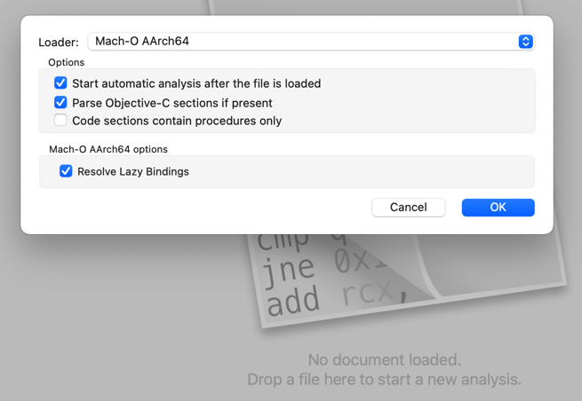
然后开始加载和分析：
- Loading Mach-O AArch64 file
- Processing bindings
- Reading Objective-C
- Reading Objective-C super refs
- Reading Objective-C class list
- Reading Objective-C super refs
- Processing bindings
加载完毕，进入主页面：
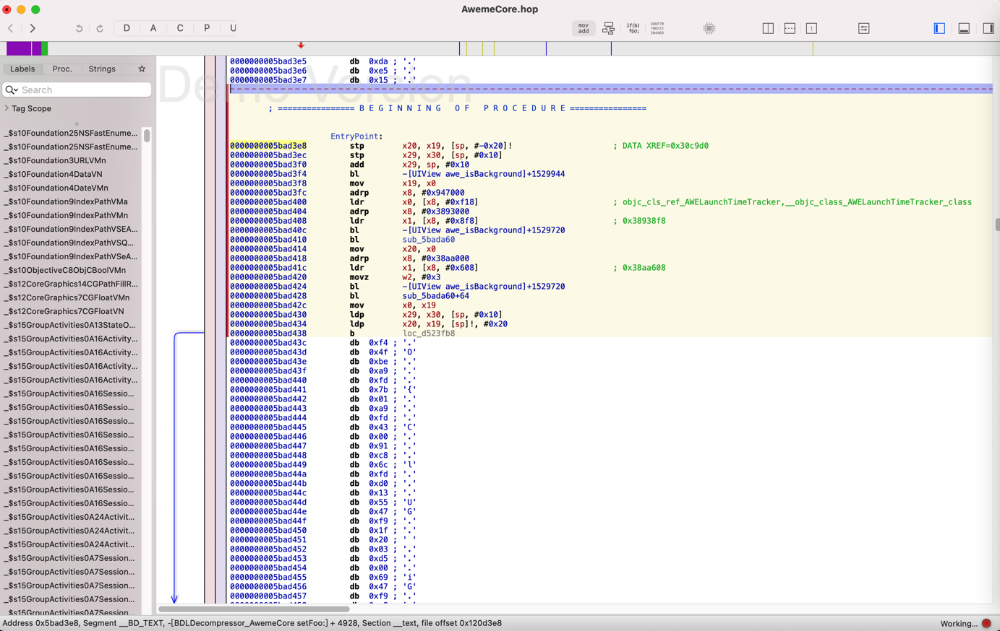
缺点：目前总体有点卡顿
分析代码逻辑
接下来，就是如何具体分析逻辑了
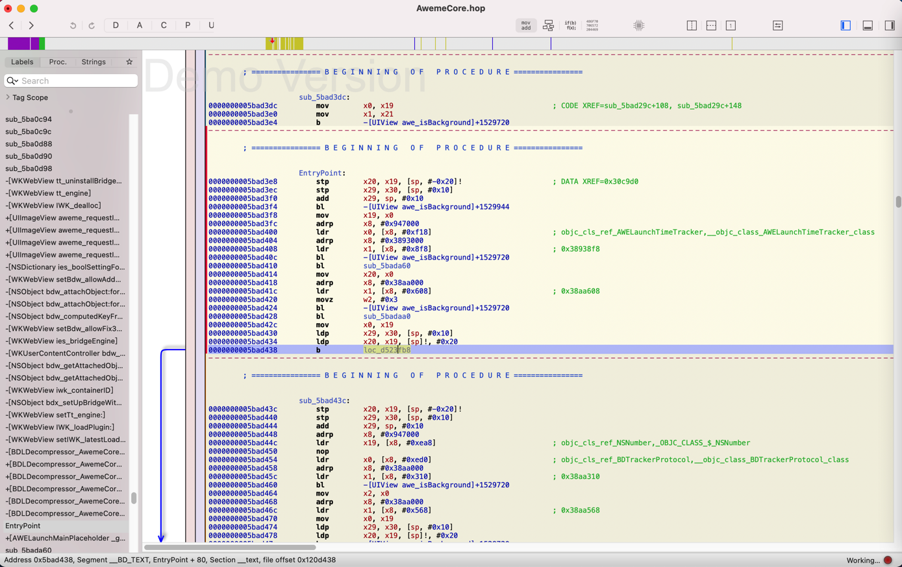
此处可以看到函数名：awe_isBackground
双击后，跳转到函数实现：
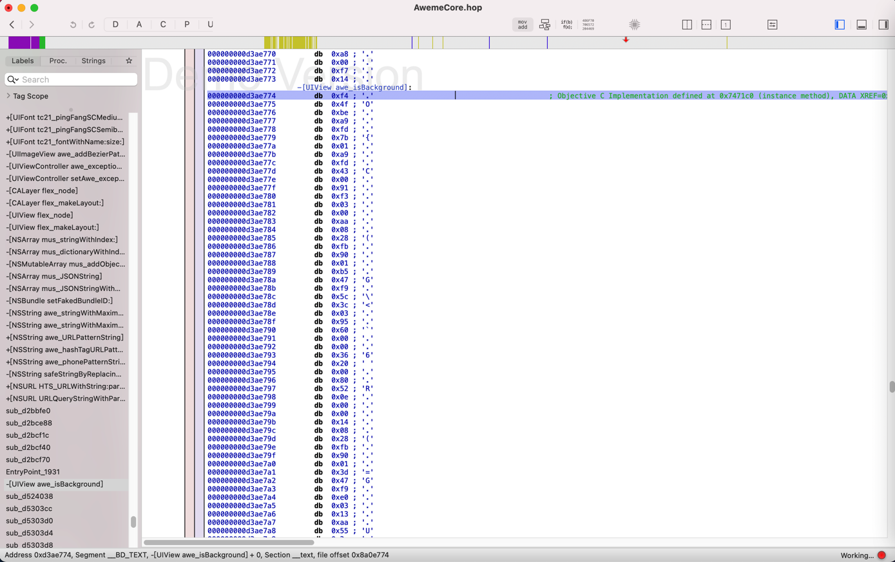
点击 尝试别人说的，切换到 伪代码 ObjC的
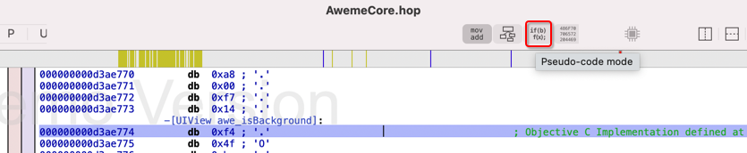
此处出现警告：
- No procedure at this address
- 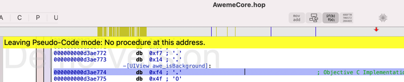
继续去找其他逻辑：比如，是否有越狱相关内容。
从左边的函数列表：
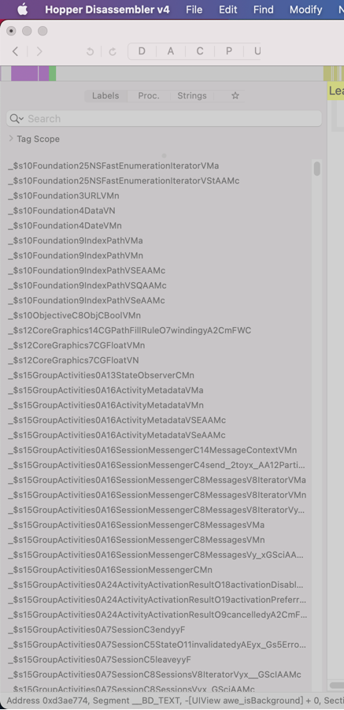
找找哪些和 启动相关的、初始化相关的
比如之前看到的，靠近entry的AWELaunchMainPlaceholder这种函数：
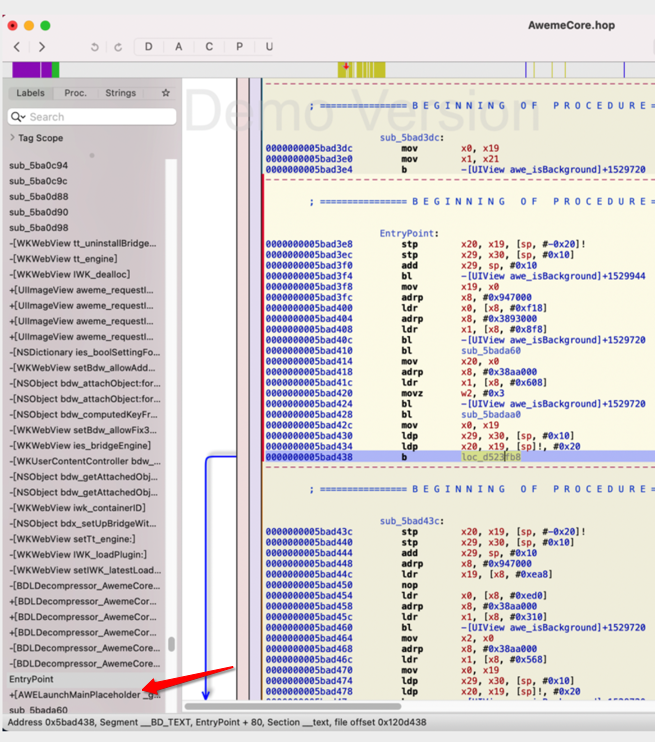
就很值得好好研究看看
另外继续研究越狱相关：
继续研究左边函数列表：
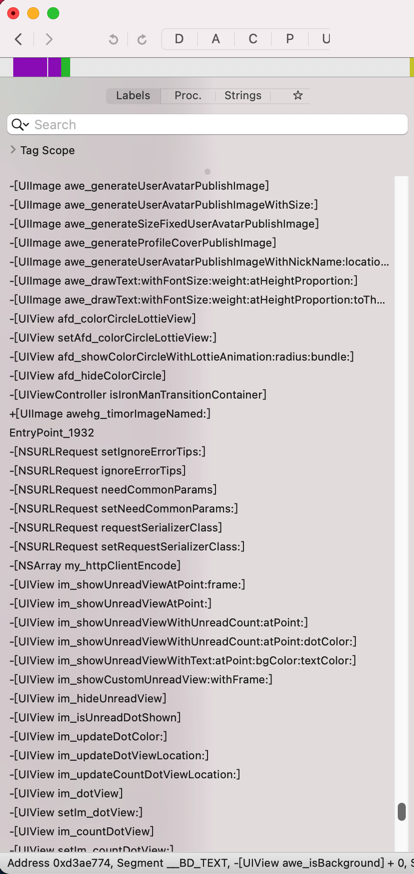
去试试，搜索Find->Find
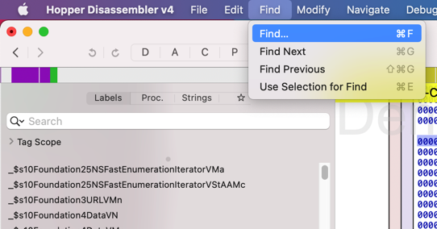
越狱：jailbreak
- 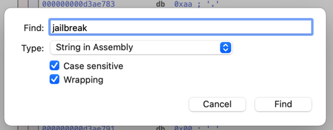
- 看看Type还有哪些类型
- 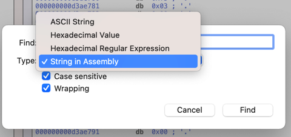
- 此处为了模糊搜索更多内容，所以取消勾选：
Case sensitive- 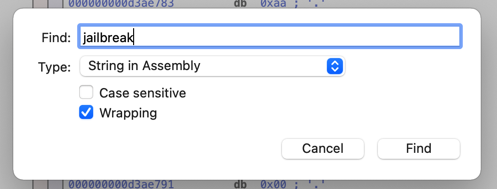
- 看看Type还有哪些类型
开始搜索：
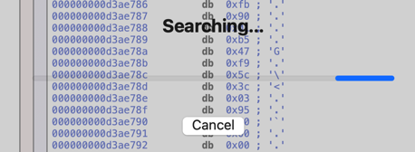
此处搜索了很多分钟，仍没有结束。
后来是，等待了2天多，依旧没结束，所以放弃。
尝试点击Cancel时，已无法点击。
索性强制退出：
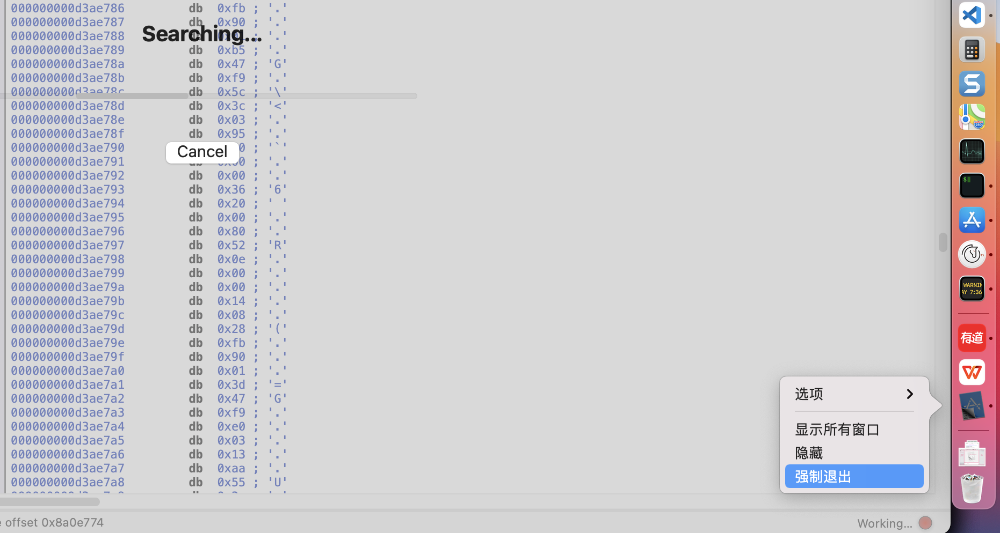
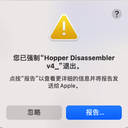
->
- 目前的结论
- Hopper对于（包含逻辑和内容很多的）大的二进制，基本上无法正常使用。